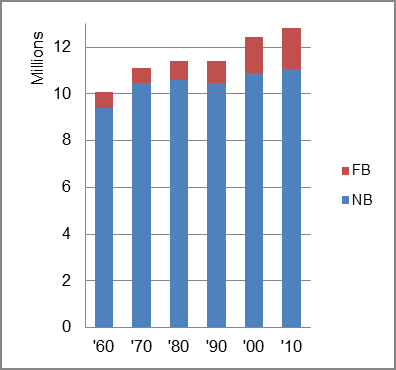

The foreign-born (FB) population increased from 686,098 in 1960 to 1,759,859 in 2010. That was an increase of 156.5 percent. The foreign-born share changed from 6.8 percent to 13.7 percent.
The share of the overall population that was native-born (NB) increased by 17.8 percent.
Illinois: Population 1960-2010 
The first chart below shows the three population change factors for three periods adjusted for annual average amounts. Domestic migration (NDM) was consistently negative and B-D consistently contributed about two-thirds of the population increase and NIM one-third.
The second chart shows the same data but with an adjustment to reflect births to immigrants shifted to NIM. In it, the relative contribution to population increase reversed with NIM becoming the principal factor in population increase.
Illinois: Sources of Population Change 1990-2013 Illinois: Sources of Population Change (Adjusted) 1990-2013
B-D NDM NIM B-D NDM NIM 90-'99 66.5% neg. 33.5% 90-'99 39.9% neg. 60.1% 00-'09 64.1% neg. 35.9% 00-'09 35.0% neg. 65.0% 10-'13 68.9% neg. 31.1% 10-'13 39.9% neg. 60.1%